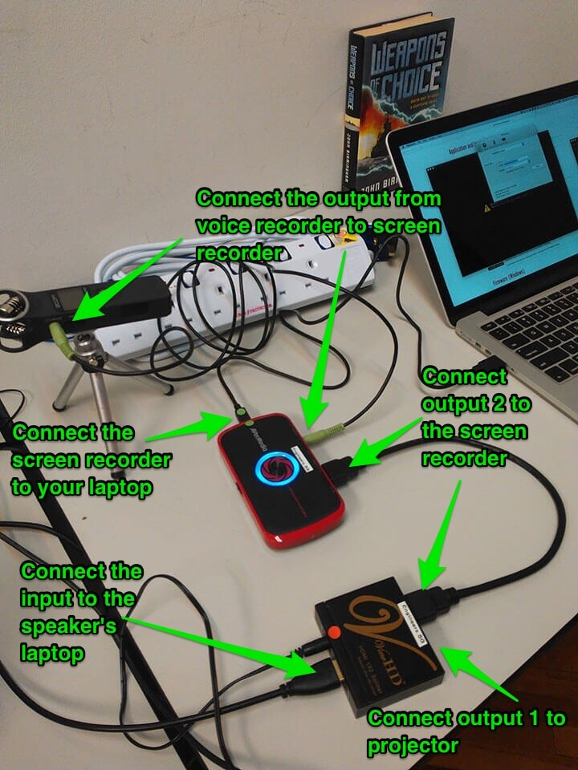
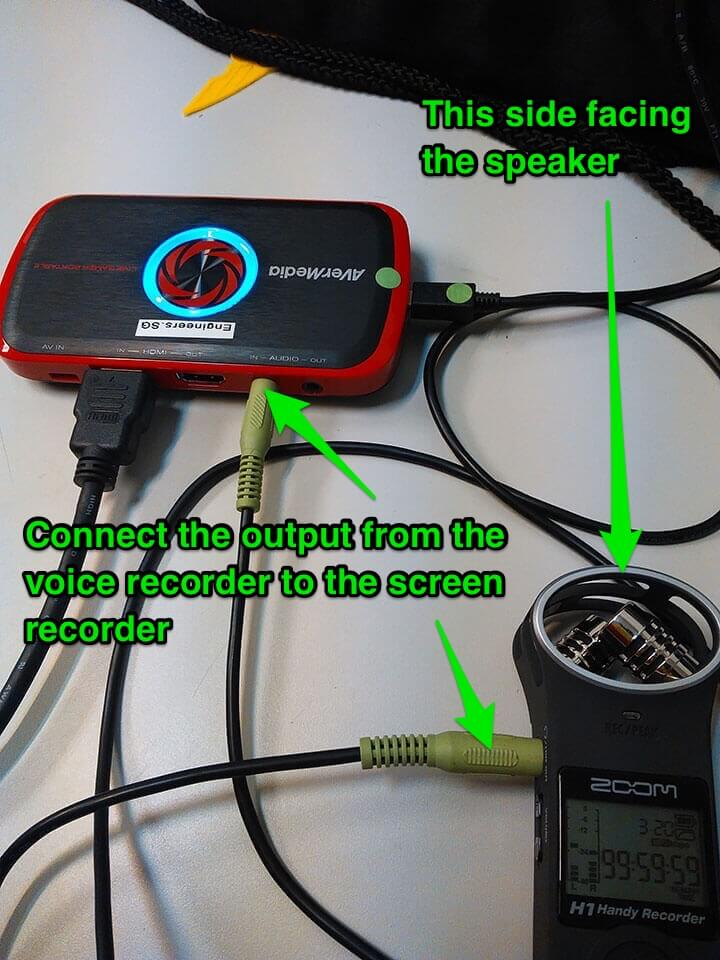
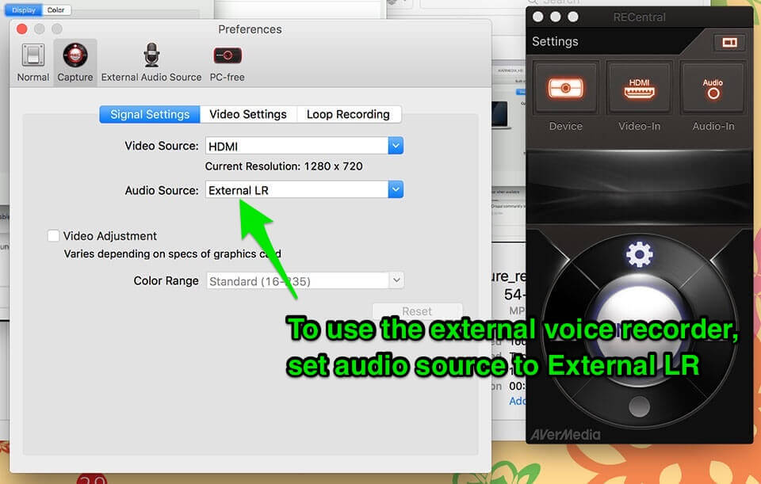
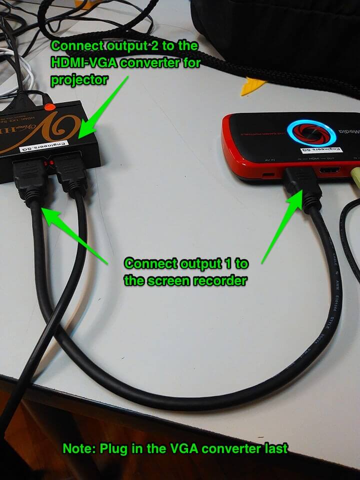

Engineers.SG video ninjas
General guidelines
- Michael
- to
- fill
Set #4
Set #4 is stored in the Engineers.SG locker at Hackerspace.SG.
-
Set up the camera with the camera stand. Make sure the camera is plugged into a power supply. The video camera is an independent setup from the screen recording. Try to capture the speaker with a bit of his/her slides so it's easier to do a post-production sync if anything goes wrong.
-
General setup will look something like this for a typical projector using HDMI. Refer to step #5 if projector uses VGA cables.
- Connect the screen recorder to your own laptop. Make sure you have installed RECentral on your laptop.
- Connect the output from the voice recorder to the screen recorder.
- Connect the screen recorder to the output 2 of the splitter.
- Connect output 1 of the splitter to the projector.
- Connect the speaker's laptop to the input of the splitter.
-
If using the voice recorder, make sure you place the microphone side of the recorder facing the speaker.
 -
Open the Preferences for RECentral, and under Capture, set the Audio Source to External LR, if using the voice recorder.
 -
In the event your project uses VGA, reverse the setup for outputs on the splitter.
- Connect the screen recorder to output 1 of the splitter.
- Connect output 2 to the HDMI-VGA converter for the projector.
If things really go south, make sure that the main video camera is working fine, and try to angle the camera in a place which captures both the speakers and the slides. Check that the lighting is suitable to capture the content projected on the screen for this particular instance.